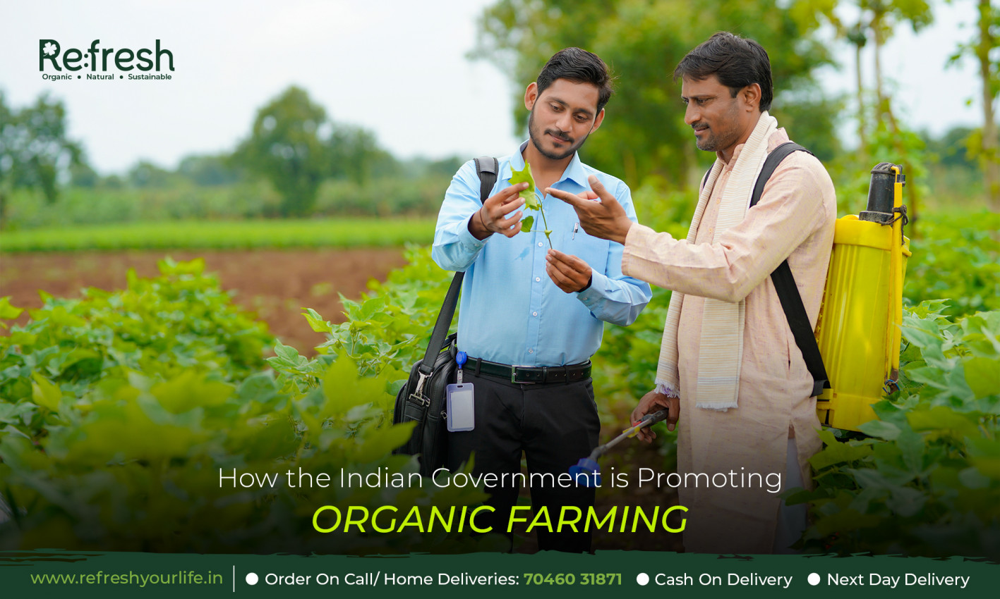
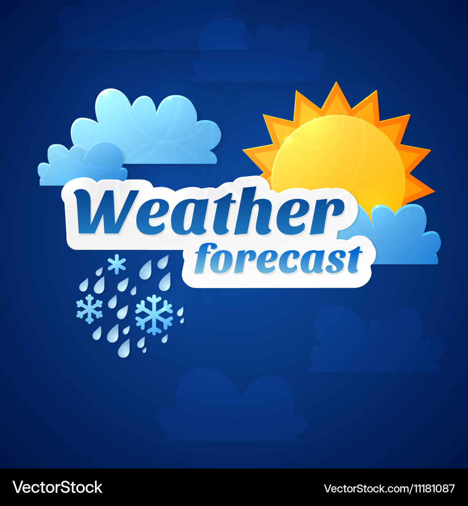
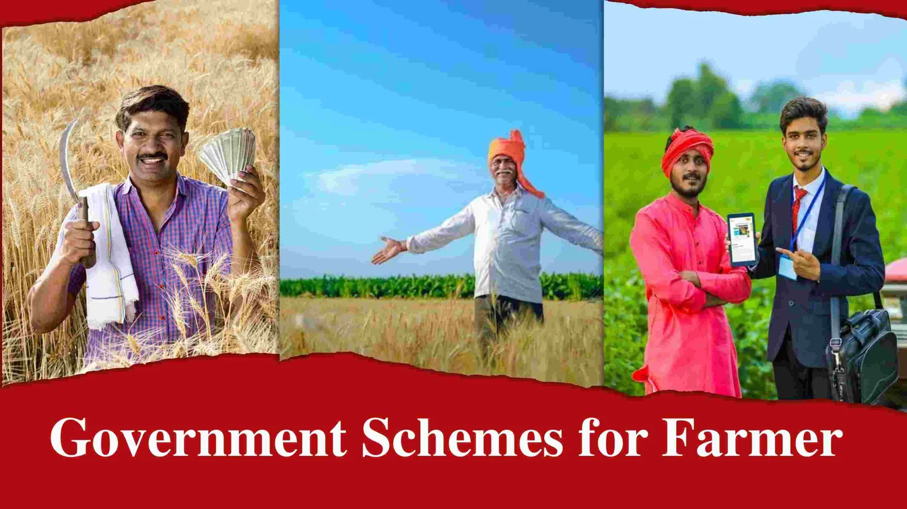
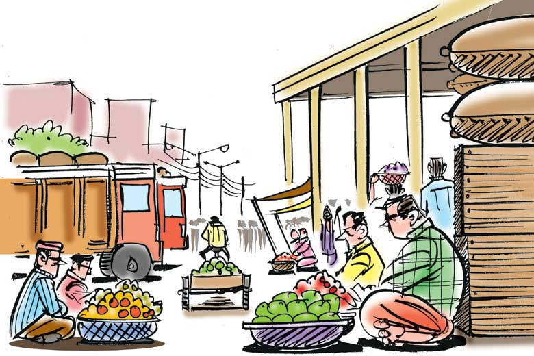
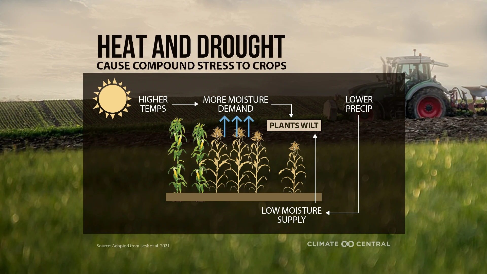
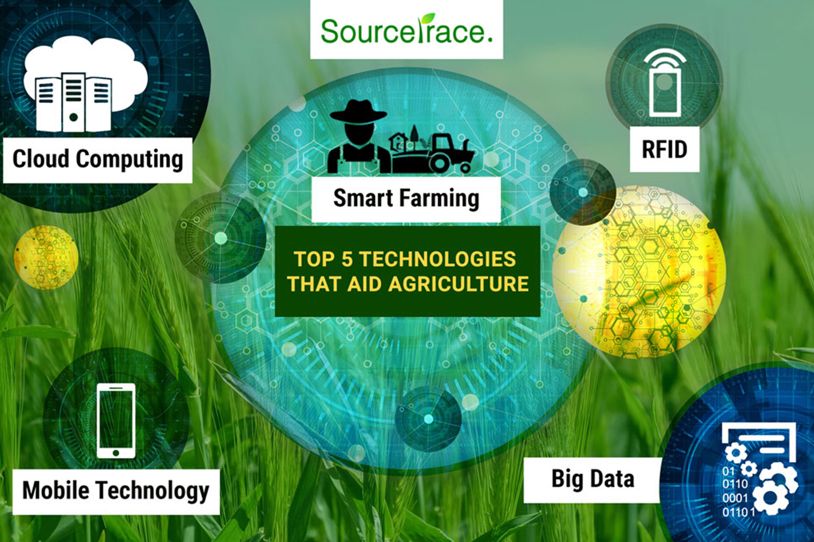
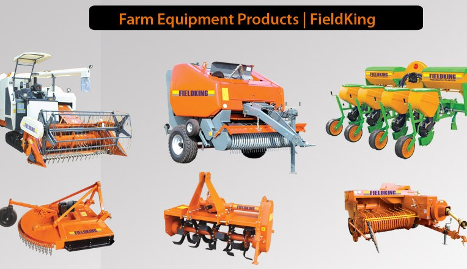

Welcome to Organic Farming
Discover everything about organic farming, weather forecasts, government policies, and more!
Weather Forecast
Get weather forecasts tailored for farmers to help with crop planning and scheduling irrigation.
Government Policies
Stay updated with the latest policies for farmers and find helpful resources for subsidies and support.
Mandi
Explore mandi prices and find a marketplace for sellers and buyers to connect, offering organic produce.
Crop Information
Detailed information on crops, soil health, and how to use sand, urea, and other farming supplies efficiently.
Tech Knowledge
Learn about the latest technologies in farming, from drones for monitoring crops to precision agriculture tools.
Farming Equipment
Explore the best farming tools, machinery, and automation systems for modern organic farming practices.